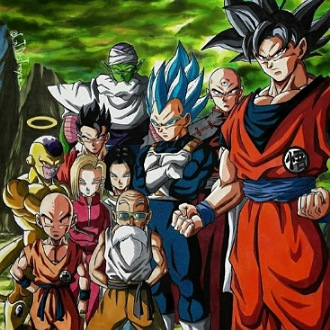

-
Dragon Ball Cls
Descrição
Dragon Ball Clássico é a primeira fase da popular franquia de anime e mangá "Dragon Ball", criada por Akira Toriyama. A série estreou em 1986 e narra as aventuras do jovem Goku, um garoto com uma cauda de macaco, que possui uma força extraordinária e um coração puro. Ele embarca em uma jornada para encontrar as sete Esferas do Dragão (Dragon Balls), que, quando reunidas, podem invocar um dragão poderoso que realiza desejos.
-
Dragon ball Z
Descrição
Dragon Ball Z é a sequência direta de "Dragon Ball", continuando a saga do protagonista Goku enquanto ele enfrenta novos e mais poderosos adversários. A série estreou em 1989 e se tornou um dos animes mais icônicos e influentes de todos os tempos. Dragon Ball Z é conhecido por suas batalhas intensas, transformação de personagens e histórias emocionantes.
-
Dragon ball GT
Descrição
Dragon Ball GT é a terceira série da franquia "Dragon Ball", criada pela Toei Animation sem o envolvimento direto de Akira Toriyama na história (série não canônica). A série estreou em 1996 e continua as aventuras de Goku após os eventos de "Dragon Ball Z". Apesar de ser menos popular entre os fãs, Dragon Ball GT tem seus próprios elementos distintivos e continuações das histórias dos personagens.
-
Dragon ball z Kai
Descrição
Dragon Ball Kai é uma versão remasterizada e condensada da série "Dragon Ball Z", lançada para comemorar o 20º aniversário da franquia. Estreou em 2009, apresentando uma qualidade de imagem e som melhoradas, além de uma edição que reduz os fillers e segue mais fielmente o mangá original de Akira Toriyama.
-
Dragon ball Super
Descrição
Dragon Ball Super é a quarta série de anime da franquia "Dragon Ball", criada por Akira Toriyama. Ela estreou em 2015 e se passa após os eventos de "Dragon Ball Z". A série introduz novos personagens, transformações e universos, expandindo significativamente o universo "Dragon Ball".
-
Super Dragon ball Heroes
Descrição
Dragon Ball Heroes é uma série de anime promocional baseada no jogo de cartas digital "Super Dragon Ball Heroes", lançado pela Bandai Namco. Diferente das séries anteriores, Dragon Ball Heroes não segue o cânone principal de "Dragon Ball", permitindo uma liberdade criativa maior e a exploração de histórias alternativas e encontros de personagens que normalmente não ocorreriam. A série estreou em 2018.
-
Dragon ball Daima
Descrição
Dragon Ball Daima é uma nova série anunciada para a franquia "Dragon Ball", criada por Akira Toriyama. A série está prevista para estrear em 2024 e traz uma nova abordagem, com Goku e vários outros personagens icônicos sendo transformados em crianças.